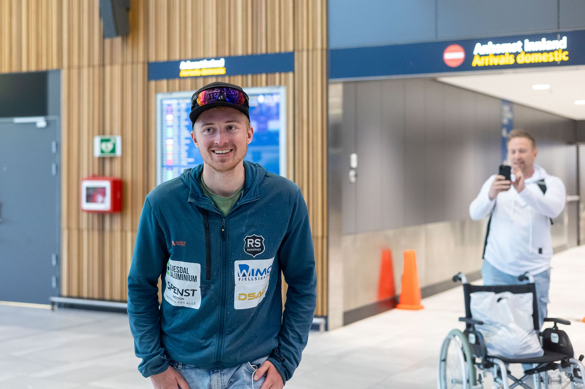

Måtte behandles for frostskader etter Everest-bragd: – Mye følelser og glede
Måtte behandles for frostskader etter Everest-bragd: – Mye følelser og glede
BT.no (Bergens Tidende)

Magnus Rørbakken ble tidenes yngste nordmann på toppen av Mount Everest. Tirsdag ankom han Flesland i rullestol.
– Litt kalde tær, men ellers går det bra, sier Magnus Rørbakken.
Han er akkurat blitt kjørt til ankomsthallen på Flesland i rullestol, men reiser seg når han ser velkomstkomiteen med norske flagg.
– Det er overveldende å se dette. Mye følelser og mye glede.
- mai ble 23-åringen fra Tunes i Arna tidenes yngste nordmann på toppen av Mount Everest.
Tirsdag kveld landet han på Flesland etter den historiske bragden. Der ble han møtt av familie og kjente med norske flagg.
Men den historiske bragden kostet for 23-åringen. Etter Rørbakken kom ned til basecamp, måtte han behandles på frostskader på tærne. Først gikk turen til sykehus i Katmandu, før behandlingen fortsatte på Rikshospitalet i Oslo.
– Den ene tåen har fått tredjegrads frostskade. Jeg kan gå som normalt, men må ta det rolig. Jeg tror det kommer til å gå bra, sier han.
På Flesland tirsdag kveld sto mor Marit Rørbakken sammen med barna Lisa (15) og Elias (20).
– Det er fantastisk å få ham hjem, helt nydelig. Det går ikke an å beskrive, sier Marit Rørbakken. Hun tok også imot ham da han kom til Oslo fra Katmandu.
Lillesøster Lisa ga sin bror en gråtkvalt klem da han kom ut i ankomsthallen.
– Det er veldig fint å vite at nå er det helt over og at han er trygg igjen. Nå gleder jeg meg bare til å ha ham her, sier hun.
Foreløpig kan ikke Magnus belaste foten så mye.
– Han er vant til å trene og være aktiv, nå blir det litt mer passivt. Lurer på hvordan det skal gå, sier moren og ler.
Hun forteller at sønnen først ble innlagt på sykehuset i Katmandu. Der skal de ha gått tom for medisin til frostskadebehandling, så han ble sendt videre til Rikshospitalet for å få behandling der.
– Han kom bare smilende ut fra gaten på Gardermoen, og jeg bare grein. Så det var den velkomsten han fikk, sier hun.
På Flesland sto gratulasjonsklemmene fra venner og familie i kø.
– Hva er det første du skal gjøre nå?
– Jeg hadde tenkt å kjøre til Søfteland og kjøpe pannekaker på Jokeren der, men jeg tror de har stengt, sier Magnus med et smil.
Norsk mat er nemlig noe av det han gleder seg mest til ved å komme hjem.
Da passer det fint at lillebror Elias har sørget for at favorittretten taco står på menyen.
– Jeg er veldig glad. Jeg gleder meg til å tulle, later "to fool around" med ham igjen, sier lillebroren.
De neste dagene skal den nye rekordholderen bruke på å slappe av.
– Så er det countryfestival i Arna i helgen. Jeg håper jeg kan gå der, sier Rørbakken.
– Du har ikke planlagt noen nye eventyr da?
– Jeg har ingen planer akkurat nå, men du skal ikke se bort ifra at jeg kommer på noe når jeg får litt varme i disse tærne. Kanskje jeg skal skrive en bok, sier han lattermildt.